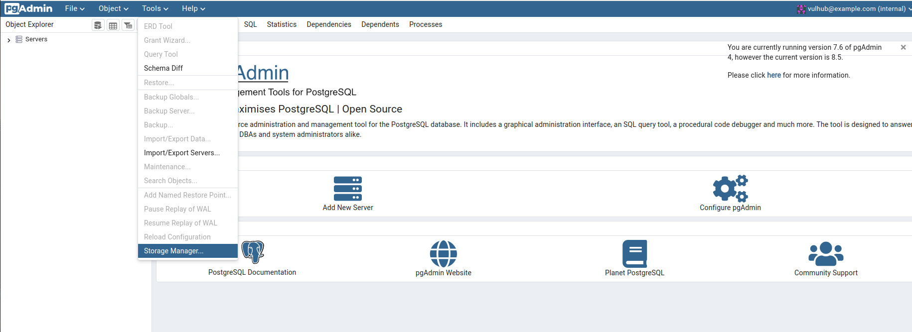
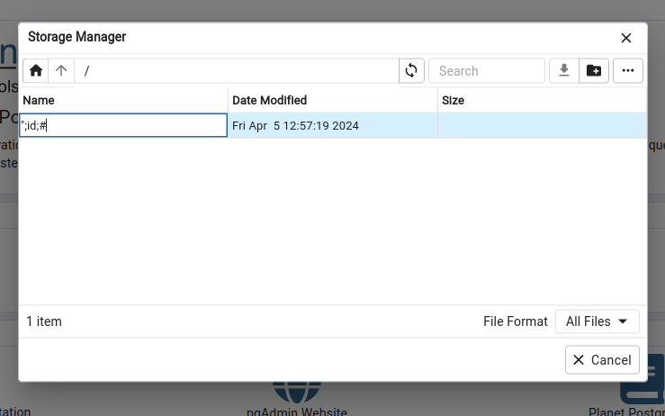
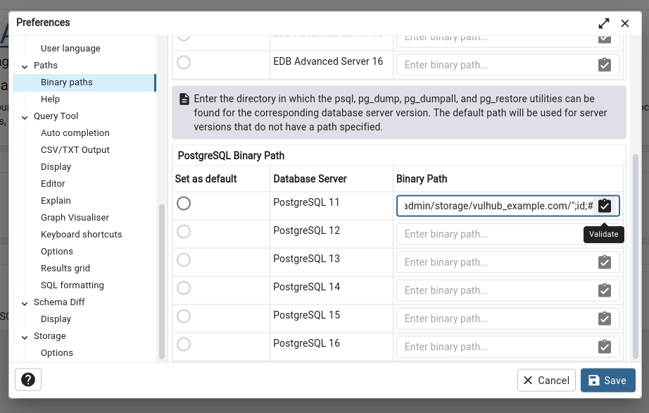
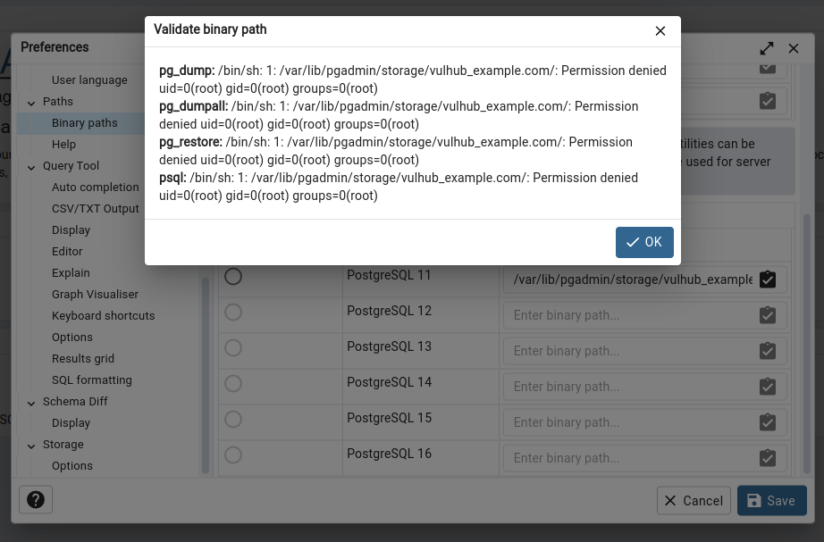

pgAdmin <= 7.6 Authenticated Remote Command Execution (CVE-2023-5002)¶
pgAdmin is a popular and feature rich Open Source administration and development platform for PostgreSQL, the most advanced Open Source database in the world.
A flaw was found in pgAdmin. This issue occurs when the pgAdmin server HTTP API validates the path a user selects to external PostgreSQL utilities such as pg_dump and pg_restore. Versions of pgAdmin prior to 7.7 failed to properly control the server code executed on this API, allowing an authenticated user to run arbitrary commands on the server.
References:
- https://github.com/pgadmin-org/pgadmin4/commit/35f05e49b3632a0a674b9b36535a7fe2d93dd0c2
- https://github.com/advisories/GHSA-ghp8-52vx-77j4
Vulnerable Environment¶
Execute following command to start a pgAdmin 7.6 server:
docker compose up -d
After the server is started, browse the http://your-ip:5050 to see the default login page of pgAdmin.
Something we should know before exploiting the issue¶
CVE-2023-5002 is a pathes bypass for previous issue CVE-2022-4223. There are 2 updates from official patches:
- Added
@login_requiredtovalidate_binary_pathfunction, not allowed unauthenticated user to access this API - Added
os.path.exists()to check if the user provided parameter is a valid path
Unfortunately, we can only bypass the second patch, so the CVE-2023-5002 is a authenticated vulerability.
Exploit¶
Login the pgAdmin by username vulhub@example.com and password vulhub.
Select "Tools -> Storage Manager" to open the filemanager dialog:

Create a new folder which name is a crafted payload ";id;#:

Full path of this folder is /var/lib/pgadmin/storage/vulhub_example.com/";id;#, we will use this path to complete the exploitation.
Go to "File -> Preferences" to open the setting dialog, open the "Paths -> Binary paths" panel.
Fill the /var/lib/pgadmin/storage/vulhub_example.com/";id;# into any field of "PostgreSQL Binary Path" then click validate:

As you can see, the id command is executed successful:
